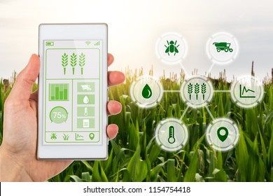

The e-farming is a helping hand to the farmers and farm labourers in improving their lives through the medium of technology

The main aim of this e-farming website is to provide felxibility for the buyers to buy best products and sellers to sell their product easily.this website also provides the clear information about the products and their costs .All people can buy their required products from any city through this website.
Objectives:
*The main objective of this project is building a website which will help farmers from indian villages to sell their products to different city markets.
*This website will act as a unique and secure way to perform agro-marketing,purchasing.
*This site will guide the farmers in all the aspects, the current rate of the different products,the total share and earned profits.